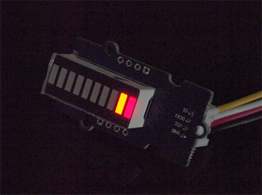

Grove – LED Bar is comprised of a 10 segment LED gauge bar and an MY9221 LED controlling chip. It can be used as an indicator for remaining battery life, voltage, water level, music volume or other values that require a gradient display. There are 10 LED bars in the LED bar graph: one red, one yellow, one light green, and seven green bars. Demo code is available to get you up and running quickly. It lights up the LEDs sequentially from red to green, so the entire bar graph is lit up in the end. Want to go further? Go ahead and code your own effect.
Model:LED05031P
Note:
More details about Suli-compatible Library, please refer to Suli
This is a simple demo which can you help you to start with Grove - LED Bar quickly.
We need a Seeeduino V3.0 and a Grove - Base Shield as well.
Plug the Grove - LED Bar onto the digital port 8 on Grove - Base Shield, and then plug the base shield onto Arduino;
You can download the library in github, click here, then extract it to libraries folder of Arduino.
Then open Arduino IDE, File -> examples -> LED_Bar -> Level, you can open the demo code.

Click Upload to Upload the code, if you have any problem about how to start Arduino, please click here for some help.
Your Grove - LED Bar is working now, it's shine.

1.You should have got a raspberry pi and a grovepi or grovepi+.
2.You should have completed configuring the development enviroment, otherwise follow here.
3.Connection
4.Navigate to the demos' directory:
cd yourpath/GrovePi/Software/Python/
nano grove_ledbar.py # "Ctrl+x" to exit #
import time
import grovepi
import random
# Connect the Grove LED Bar to digital port D5
# DI,DCKI,VCC,GND
ledbar = 5
grovepi.pinMode(ledbar,"OUTPUT")
time.sleep(1)
i = 0
# LED Bar methods
# grovepi.ledBar_init(pin,orientation)
# grovepi.ledBar_orientation(pin,orientation)
# grovepi.ledBar_setLevel(pin,level)
# grovepi.ledBar_setLed(pin,led,state)
# grovepi.ledBar_toggleLed(pin,led)
# grovepi.ledBar_setBits(pin,state)
# grovepi.ledBar_getBits(pin)
while True:
try:
print "Test 1) Initialise - red to green"
# ledbar_init(pin,orientation)
# orientation: (0 = red to green, 1 = green to red)
grovepi.ledBar_init(ledbar, 0)
time.sleep(.5)
print "Test 2) Set level"
# ledbar_setLevel(pin,level)
# level: (0-10)
for i in range(0,11):
grovepi.ledBar_setLevel(ledbar, i)
time.sleep(.2)
time.sleep(.3)
grovepi.ledBar_setLevel(ledbar, 8)
time.sleep(.5)
grovepi.ledBar_setLevel(ledbar, 2)
time.sleep(.5)
grovepi.ledBar_setLevel(ledbar, 5)
time.sleep(.5)
print "Test 3) Switch on/off a single LED"
# ledbar_setLed(pin,led,state)
# led: which led (1-10)
# state: off or on (0,1)
grovepi.ledBar_setLed(ledbar, 10, 1)
time.sleep(.5)
grovepi.ledBar_setLed(ledbar, 9, 1)
time.sleep(.5)
grovepi.ledBar_setLed(ledbar, 8, 1)
time.sleep(.5)
grovepi.ledBar_setLed(ledbar, 1, 0)
time.sleep(.5)
grovepi.ledBar_setLed(ledbar, 2, 0)
time.sleep(.5)
grovepi.ledBar_setLed(ledbar, 3, 0)
time.sleep(.5)
print "Test 4) Toggle a single LED"
# flip a single led - if it is currently on, it will become off and vice versa
# ledbar_toggleLed(ledbar, led)
grovepi.ledBar_toggleLed(ledbar, 1)
time.sleep(.5)
grovepi.ledBar_toggleLed(ledbar, 2)
time.sleep(.5)
grovepi.ledBar_toggleLed(ledbar, 9)
time.sleep(.5)
grovepi.ledBar_toggleLed(ledbar, 10)
time.sleep(.5)
print "Test 5) Set state - control all leds with 10 bits"
# ledbar_setBits(ledbar, state)
# state: (0-1023) or (0x00-0x3FF) or (0b0000000000-0b1111111111) or (int('0000000000',2)-int('1111111111',2))
for i in range(0,32):
grovepi.ledBar_setBits(ledbar, i)
time.sleep(.2)
time.sleep(.3)
print "Test 6) Get current state"
# state = ledbar_getBits(ledbar)
# state: (0-1023) a bit for each of the 10 LEDs
state = grovepi.ledBar_getBits(ledbar)
print "with first 5 leds lit, the state should be 31 or 0x1F"
print state
# bitwise shift five bits to the left
state = state << 5
# the state should now be 992 or 0x3E0
# when saved the last 5 LEDs will be lit instead of the first 5 LEDs
time.sleep(.5)
print "Test 7) Set state - save the state we just modified"
# ledbar_setBits(ledbar, state)
# state: (0-1023) a bit for each of the 10 LEDs
grovepi.ledBar_setBits(ledbar, state)
time.sleep(.5)
print "Test 8) Swap orientation - green to red - current state is preserved"
# ledbar_orientation(pin,orientation)
# orientation: (0 = red to green, 1 = green to red)
# when you reverse the led bar orientation, all methods know how to handle the new LED index
# green to red
grovepi.ledBar_orientation(ledbar, 1)
time.sleep(.5)
# red to green
grovepi.ledBar_orientation(ledbar, 0)
time.sleep(.5)
# green to red
grovepi.ledBar_orientation(ledbar, 1)
time.sleep(.5)
print "Test 9) Set level, again"
# ledbar_setLevel(pin,level)
# level: (0-10)
# note the red LED is now at index 10 instead of 1
for i in range(0,11):
grovepi.ledBar_setLevel(ledbar, i)
time.sleep(.2)
time.sleep(.3)
print "Test 10) Set a single LED, again"
# ledbar_setLed(pin,led,state)
# led: which led (1-10)
# state: off or on (0,1)
grovepi.ledBar_setLed(ledbar, 1, 0)
time.sleep(.5)
grovepi.ledBar_setLed(ledbar, 3, 0)
time.sleep(.5)
grovepi.ledBar_setLed(ledbar, 5, 0)
time.sleep(.5)
print "Test 11) Toggle a single LED, again"
# ledbar_toggleLed(ledbar, led)
grovepi.ledBar_toggleLed(ledbar, 2)
time.sleep(.5)
grovepi.ledBar_toggleLed(ledbar, 4)
time.sleep(.5)
print "Test 12) Get state"
# state = ledbar_getBits(ledbar)
# state: (0-1023) a bit for each of the 10 LEDs
state = grovepi.ledBar_getBits(ledbar)
# the last 5 LEDs are lit, so the state should be 992 or 0x3E0
# bitwise shift five bits to the right
state = state >> 5
# the state should now be 31 or 0x1F
print "Test 13) Set state, again"
# ledbar_setBits(ledbar, state)
# state: (0-1023) a bit for each of the 10 LEDs
grovepi.ledBar_setBits(ledbar, state)
time.sleep(.5)
print "Test 14) Step"
# step through all 10 LEDs
for i in range(0,11):
grovepi.ledBar_setLevel(ledbar, i)
time.sleep(.2)
time.sleep(.3)
print "Test 15) Bounce"
# switch on the first two LEDs
grovepi.ledBar_setLevel(ledbar, 2)
# get the current state (which is 0x3)
state = grovepi.ledBar_getBits(ledbar)
# bounce to the right
for i in range(0,9):
# bit shift left and update
state <<= 1;
grovepi.ledBar_setBits(ledbar, state)
time.sleep(.2)
# bounce to the left
for i in range(0,9):
# bit shift right and update
state >>= 1;
grovepi.ledBar_setBits(ledbar, state)
time.sleep(.2)
time.sleep(.3)
print "Test 16) Random"
for i in range(0,21):
state = random.randint(0,1023)
grovepi.ledBar_setBits(ledbar, state)
time.sleep(.2)
time.sleep(.3)
print "Test 17) Invert"
# set every 2nd LED on - 341 or 0x155
state = 341
for i in range(0,5):
grovepi.ledBar_setBits(ledbar, state)
time.sleep(.2)
# bitwise XOR all 10 LEDs on with the current state
state = 0x3FF ^ state
grovepi.ledBar_setBits(ledbar, state)
time.sleep(.2)
time.sleep(.3)
print "Test 18) Walk through all possible combinations"
for i in range(0,1024):
grovepi.ledBar_setBits(ledbar, i)
time.sleep(.1)
time.sleep(.4)
except KeyboardInterrupt:
grovepi.ledBar_setBits(ledbar, 0)
break
except IOError:
print "Error"
5.Run the demo.
sudo python grove_ledbar.py
6.This demo may not work if your grovepi dosen't have the newest firmware, update the firmware.
cd yourpath/GrovePi/Firmware sudo ./firmware_update.sh